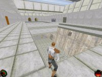
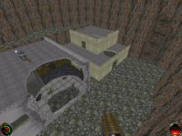
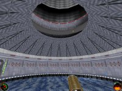
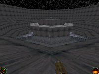
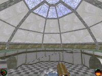
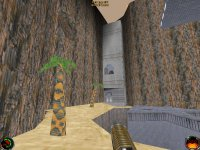
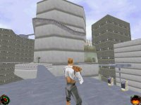

|  | Azul City Justin Pearce |
|---|---|
| A small, peaceful looking city torn apart by riots, Azul City has become a dangerous place to tread. Rioters rule, and only the swift and deadly have a chance at survival. | |
|  | Desolation James Holguin |
| An insignificant Rebel-held town, destroyed by Imperial forces. Crumbling buildings hidden in twisting canyons, only one word can be used to describe this now-dead town. Desolate. | |
|  | Destiny's Arena Jimanatore |
| The gravity control station for a colony on a small moon has become the focus point for a free for all battle. Use the station's artificial gravity control to overcome your enemies. | |
|  | Planetary Hydro Cannon Thingamajig JM |
| Every planet needs a... Planetary Hydro Cannon Thingamajig. This particular planet's happens to be infested with trigger happy pyschopaths. | |
|  | Barons Hed Plaza ThreeDee |
| Imperial intelligence failed to report this place when the city of Barons Hed was invaded. Unlike much of the city, it still stands and would be invaluable if found by modern-day archeologists. | |
|  | Thunder Lagoon Schizophrenic Techno-Penguin #827 |
| The rocky area around Thunder Lagoon holds a myriad of caves, pitfalls, and structures built into the canyon walls. Watch your step, and keep your eyes peeled. | |
|  | Wayrest Landing Mike Hamilton |
| Wayrest Landing stands amidst the towering buildings of Downtown Wayrest. Its bars and gardens offer a place for travelers and traders to sit back, relax, and work out their differences... |